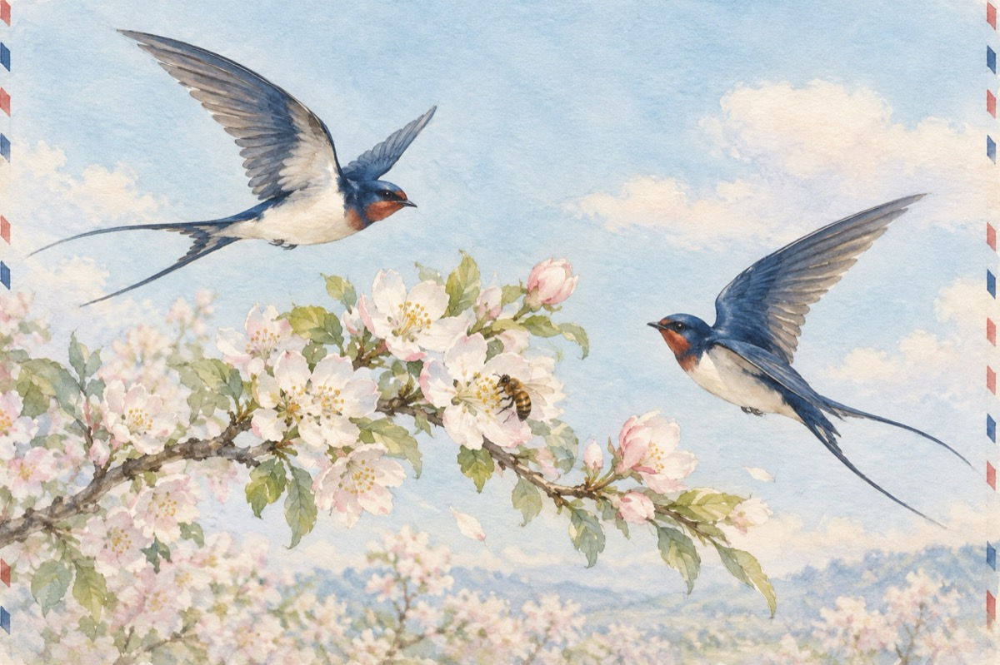

Primăvară, bine-ai venit
Au înflorit din nou copacii
Parfumul primăverii plutește-n jur
Cât te iubesc natură, nici nu știi,
Las mărturia unui mugur.
Zvâcnește inima în piept
De bucuria întâlnirii
De când, iubito, tot aștept
Această clipă-a fericirii!
Albinele-s toate la datorie
Culegătoare-a dulcelui nectar
În zborul lor cuprins în simfonie
Și-a căutărilor făr’ de hotar.
Iată-au venit și rândunelele
Cucul își poartă glasul în zăvoi
Ieșit-au din iernat și gâzele
Iar primăvara a sosit și-n noi.
Copiii flori de primăvară
Cum ghioceii au ieșit
Iar fluturașii în înalturi zboară
În primăvară, „Bine ai venit!”
Vasile Groza